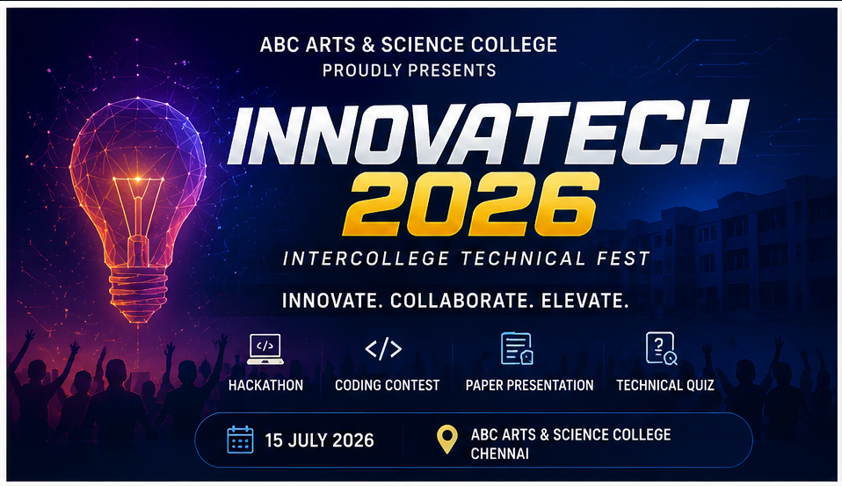
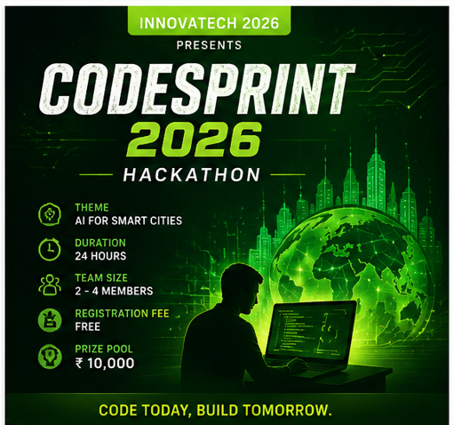
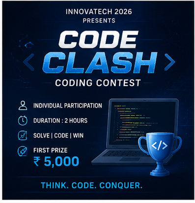
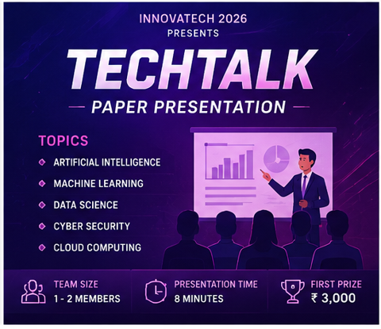
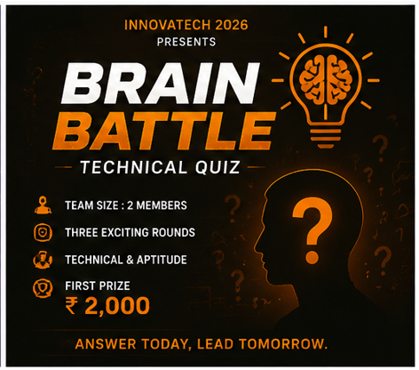

Dont't miss any of your important events Stay Updated

INNOVATECH 2026 is an Intercollege Technical Symposium organized to encourage innovation, creativity, and technical excellence among students. The event brings together participants from various colleges to showcase their talents, exchange ideas, and gain practical experience through exciting competitions. It features events such as CodeSprint 2026 Hackathon, Code Clash Coding Contest, TechTalk Paper Presentation, and Brain Battle Technical Quiz. Students will have the opportunity to improve their technical knowledge, problem-solving abilities, communication skills, and teamwork. INNOVATECH 2026 aims to create a platform where young minds can learn, compete, collaborate, and inspire each other for a better technological future.

CodeSprint 2026 is a 24-hour intercollege hackathon designed to inspire innovation and creative problem-solving among students. Participants work in teams to develop practical solutions for real-world challenges using technology. The event encourages collaboration, critical thinking, and technical excellence while providing a platform to showcase programming and project development skills. Teams will brainstorm ideas, design prototypes, and present their final solutions to a panel of judges. CodeSprint 2026 offers an exciting opportunity for students to learn, compete, network with peers, and gain hands-on experience in software development, innovation, and teamwork.

Code Clash is an exciting coding competition that tests participants' programming knowledge, logical reasoning, and problem-solving abilities. Students will solve a series of algorithmic and coding challenges within a specified time limit. The contest is designed to improve analytical thinking and enhance coding efficiency while encouraging healthy competition among participants. Questions will cover fundamental programming concepts, data structures, algorithms, and logical puzzles. Code Clash provides a platform for aspiring programmers to demonstrate their technical skills and compete with talented students from different colleges. Participants can gain valuable experience and confidence in competitive programming environments.

TechTalk is a paper presentation event that allows students to share their research findings, innovative ideas, and technical knowledge with a wider audience. Participants can present papers on emerging technologies such as Artificial Intelligence, Machine Learning, Cyber Security, Data Science, and Cloud Computing. The event aims to develop communication, presentation, and research skills while promoting academic excellence and innovation. Students will have the opportunity to explain their concepts, answer questions from judges, and receive constructive feedback. TechTalk encourages knowledge sharing, critical thinking, and professional development, making it an ideal platform for aspiring researchers and innovators.

Brain Battle is a technical quiz competition designed to challenge participants' knowledge of technology, science, current affairs, and aptitude. Teams compete through multiple rounds that test their understanding, quick thinking, and decision-making abilities. The event promotes learning in a fun and competitive environment while encouraging teamwork and communication. Questions will cover a wide range of technical topics, including computer science, emerging technologies, engineering concepts, and general aptitude. Brain Battle provides students with an opportunity to showcase their knowledge, improve their analytical skills, and engage in healthy competition with participants from various colleges and academic backgrounds.
Kovaipudur, Coimbatore-641014